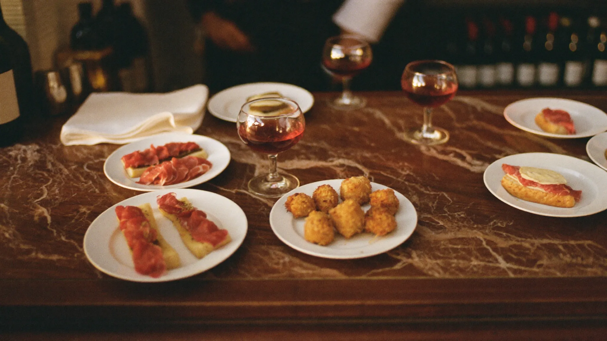
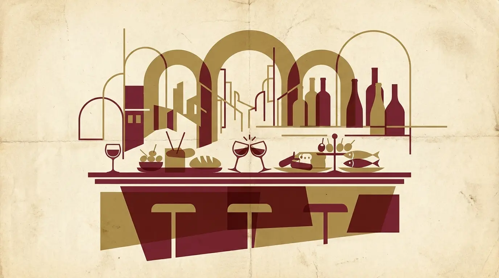
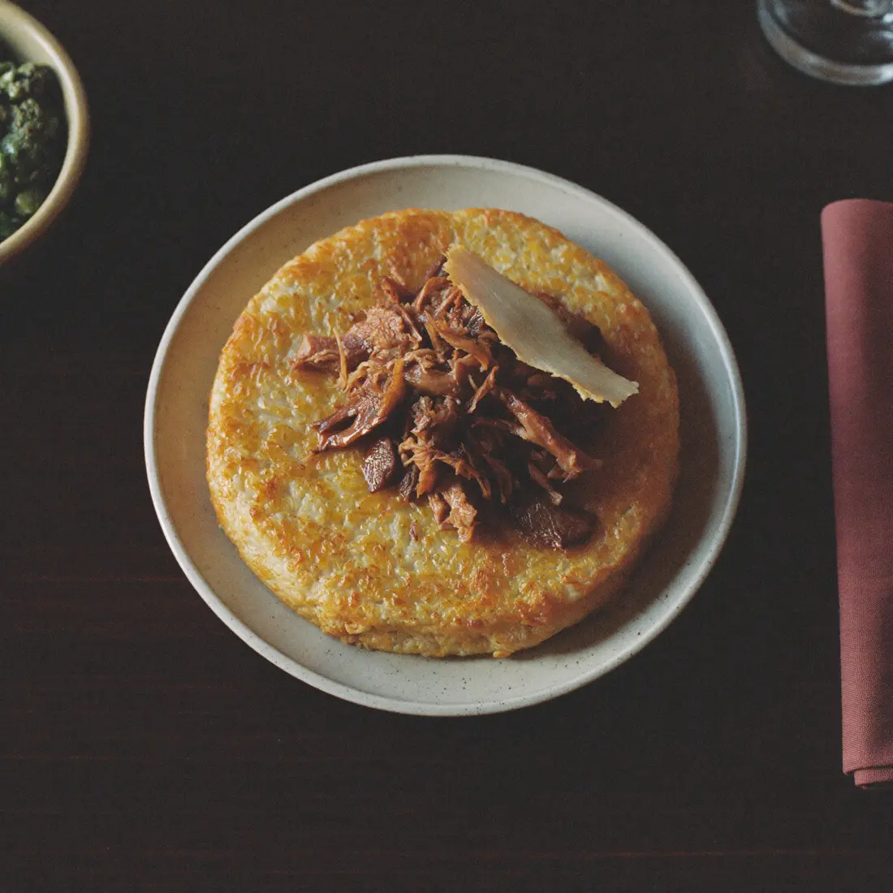
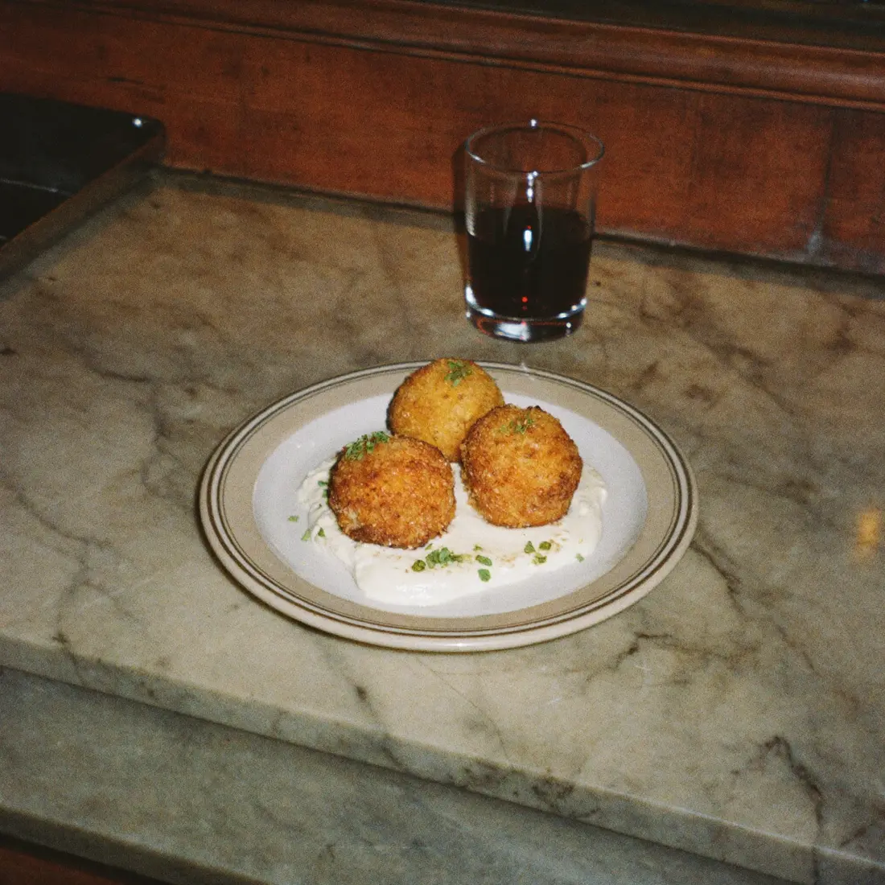
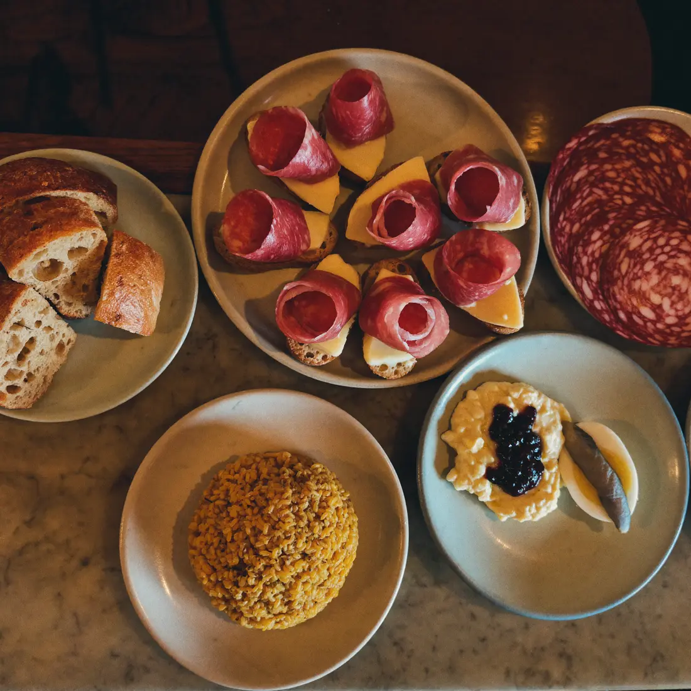
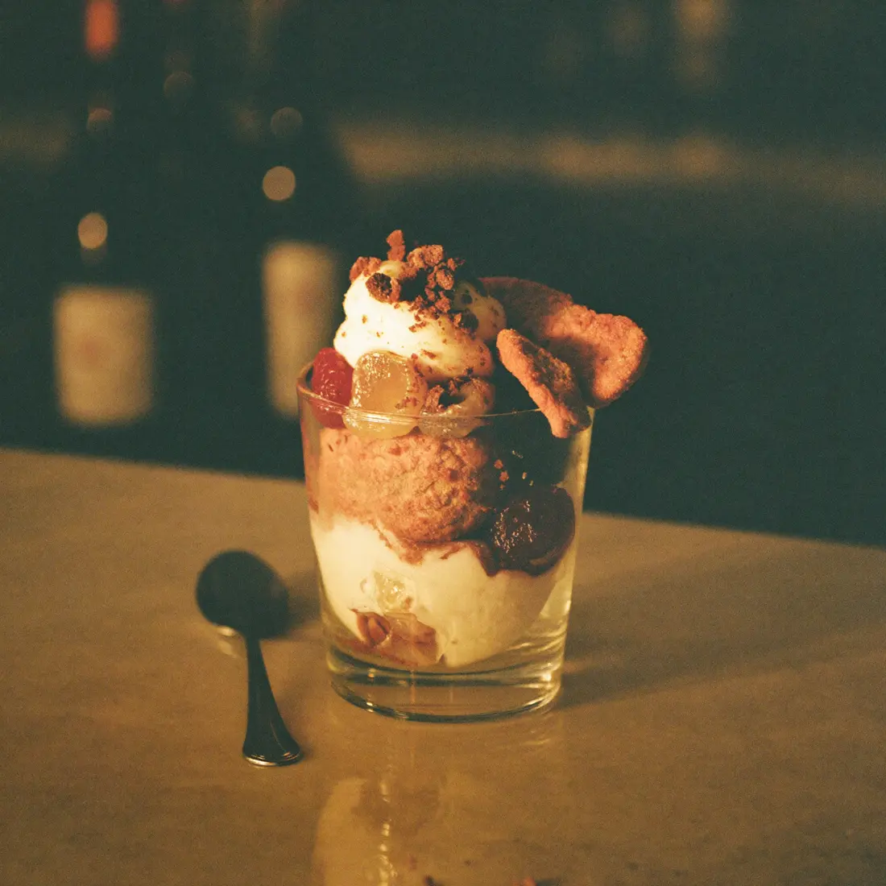
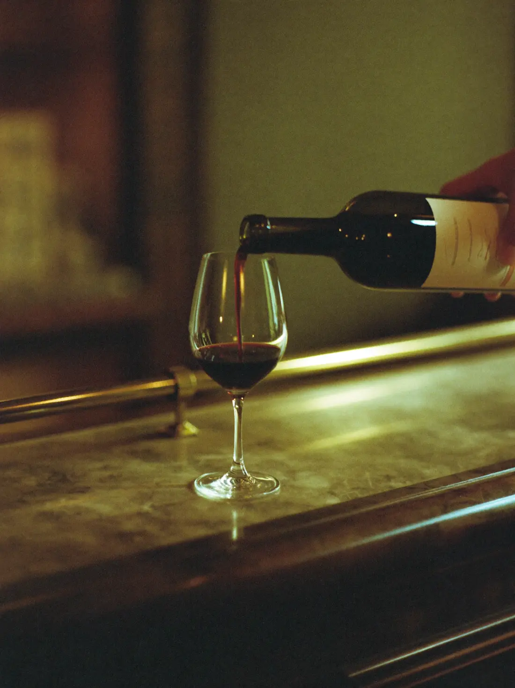
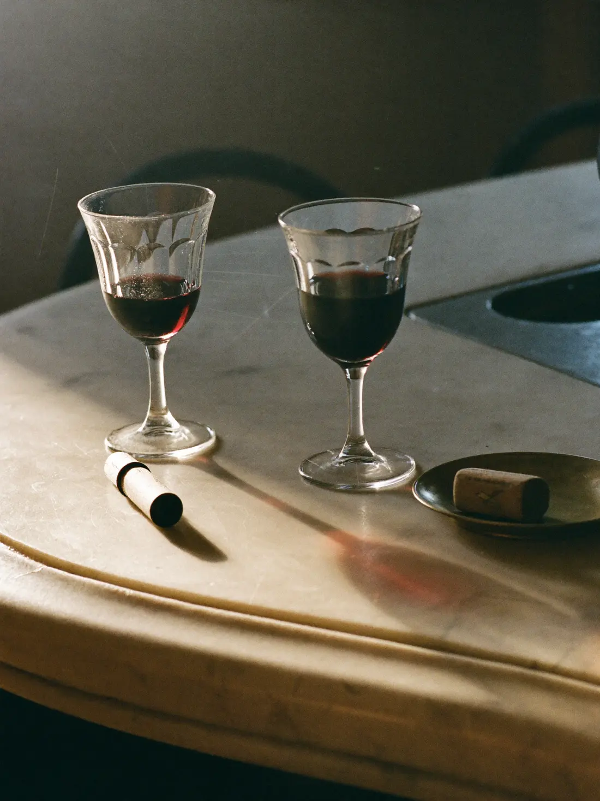
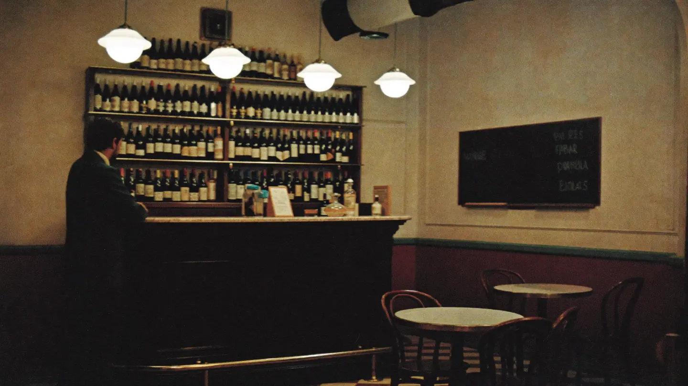

Milano · Porta Venezia
OMBR
un bacaro milanese
ombre, cicchetti e la tavola milanese prima del buffet
Apriamo presto

il manifesto
Prima del buffet, Milano beveva così
C'era una Milano che all'ora giusta si fermava al banco: un bicchiere piccolo di vino, due bocconi presi con le dita, quattro chiacchiere in piedi e poi via. È la città che ha inventato l'aperitivo — quella di Campari, dei caffè con l'ottone lucido, dei tram che sferragliano fuori. Poi l'aperitivo è diventato un buffet sotto le luci al neon, e quella Milano si è persa per strada.
Ombra la va a riprendere. Il nome viene dal rito veneziano del bacaro — l'ombra è il bicchiere di vino che si beve al banco — ma la parola, per una coincidenza che sembra un destino, è la stessa in francese: ombre. Metà milanese e metà francese, come chi ha immaginato questo posto.
Non stiamo importando Venezia. Stiamo recuperando Milano: nervetti e mondeghili al posto dei cicchetti in saor, il riso giallo che diventa croccante, i vini di Lombardia e Piemonte serviti in bicchieri piccoli a prezzi onesti. Al banco, in piedi, come una volta.

Cos'è un'ombra?
Un bicchiere piccolo di vino, servito al banco a prezzo onesto. A Venezia si dice che i vinai seguissero l'ombra del campanile per tenere il vino al fresco. In francese si scrive quasi uguale: ombre.
Cos'è un cicchetto?
Un assaggio da banco, da mangiare in uno o due morsi accanto al bicchiere. Da noi parla milanese: nervetti, mondeghili, salame Milano, riso giallo croccante.
Cos'è un bacaro?
L'osteria-enoteca veneziana dove si beve al banco e si mangiano cicchetti: a Venezia è un rito quotidiano. Il nostro lo parla in milanese.
E il "giro"?
A Venezia non ci si ferma in un posto solo: si fa il giro — un'ombra e un cicchetto per locale, poi si cambia. Un bacaro è fatto per entrare, bere in piedi e ripartire.
Nervetti, mondeghili?
Nervetti: cartilagini di vitello con cipolla e prezzemolo, freschi e croccanti. Mondeghili: le polpette milanesi di brasato. Roba di casa, servita piccola.
13 cicchetti 4 dolci 40 etichette 1 bancone
si cambia ogni giorno
La lavagna di oggi
Oggi, —
Dal banco
- Nervetti con cipolla e prezzemolo4
- Mondeghili di brasato10
- Arancino di riso giallo4,50
- Riso al salto con ossobuco ★15
Le ombre della settimana
- Bonarda dell'Oltrepò — Barbacarlo e dintorni3,50
- Riesling dell'Oltrepò Pavese3,50
- Barbera d'Asti di piccolo produttore4
La lavagna vera cambia ogni giorno — questa è un'anteprima di come suonerà. Per quella del giorno, seguici su Instagram.






prezzi chiari, come al banco
Listino
Cicchetti classici dal banco, 3–6 €
Cicchetti gourmet per chi vuole salire, 9–16 €
riso giallo croccante, ossobuco brasato sfilacciato, gremolada e midollo — il piatto di casa
le polpette milanesi, fatte come si deve: brasato, crema di patate, una punta di mostarda
Dolci piccoli, come tutto qui
La carta dei vini Lombardia e Piemonte, quasi solo
Quaranta etichette, quasi tutte di piccoli vignaioli. In mescita cambiano ogni settimana sulla lavagna — qui sotto le zone da cui peschiamo. Tutto anche in bottiglia.
Bollicine
Bianchi
Rossi
Al banco
Prezzi indicativi in attesa di apertura — ★ i piatti di casa.
al banco si arriva a piedi
Dove & quando

L'indirizzo
Via Melzo 12
20129 Milano · Porta Venezia
Ⓜ Porta Venezia (M1) · tram 9 e 33 · passante Porta Venezia
Gli orari
| martedì – venerdì | 17.30 – 23.00 |
|---|---|
| sabato | 12.00 – 23.30 |
| domenica | 12.00 – 21.00 |
| lunedì | riposo |
il banco dei cicchetti apre con noi e chiude quando finiscono
Niente prenotazioni. Si beve al banco, come una volta. Per gruppi, eventi o una bottiglia da portare a casa, scrivici su WhatsApp.
due parole quando vuoi